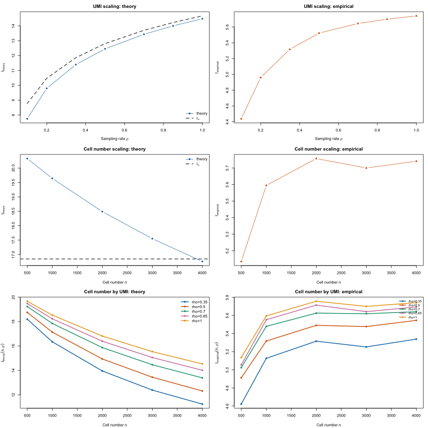

This page compares theoretical and empirical RNA-to-ADT spectral mutual information on the 4,000-cell GSE164378 3' CITE-seq package example.
library(scScale)
## Loading required package: Matrix
data(gse164378_3p_citeseq_hvg)
rna_counts <- gse164378_3p_citeseq_hvg$rna_counts
adt_counts <- gse164378_3p_citeseq_hvg$adt_counts
r <- 12
dim(rna_counts)
## [1] 2000 4000
dim(adt_counts)
## [1] 228 4000
rna_fit <- scscale_fit(
rna_counts,
r = r,
fit_umi = FALSE,
mp_max_iter = 20,
mp_grid_n = 3000,
store_matrix = TRUE
)
adt_fit <- scscale_fit(
adt_counts,
r = r,
fit_umi = FALSE,
mp_max_iter = 20,
mp_grid_n = 3000
)
theta_Y <- adt_fit$theta_X[seq_len(r)]
I_infinity <- scscale_i_infinity(rna_fit, adt_fit, r = r)$I_infinity
data.frame(
modality = c("RNA", "ADT"),
p = c(rna_fit$p, adt_fit$p),
n = c(rna_fit$n, adt_fit$n),
c_X = c(rna_fit$c_X, adt_fit$c_X),
tau2 = c(rna_fit$bulk$tau2, adt_fit$bulk$tau2),
lambda_plus = c(rna_fit$bulk$lambda_plus, adt_fit$bulk$lambda_plus),
selected_iteration = c(rna_fit$bulk$selected_iteration, adt_fit$bulk$selected_iteration)
)
## modality p n c_X tau2 lambda_plus selected_iteration
## 1 RNA 2000 4000 0.500 0.6022713 1.7551473 8
## 2 ADT 228 4000 0.057 0.1435793 0.2203215 17
data.frame(
I_theory = scscale_information_from_theta(rna_fit$theta_X[seq_len(r)], theta_Y),
I_infinity = I_infinity
)
## I_theory I_infinity
## 1 16.76075 16.84747
sampling_rates <- c(0.10, 0.20, 0.35, 0.50, 0.70, 0.85, 1.00)
umi_scaling <- scscale_umi_scaling(
rna_counts,
sampling_rates = sampling_rates,
r = r,
seed = 164378,
n_replicates = 1,
theta_Y = theta_Y,
reference_fit = rna_fit,
empirical = FALSE,
mp_max_iter = 20,
mp_grid_n = 2000
)
umi_theory <- unique(umi_scaling$scaling[, c(
"sampling_rate", "U", "total_umi_observed", "I_theory", "I_infinity"
)])
empirical_umi_rows <- vector("list", length(sampling_rates))
for (i in seq_along(sampling_rates)) {
rho <- sampling_rates[i]
rna_sub <- rna_counts
if (rho < 1) {
rna_sub <- scscale_downsample_counts_fraction(rna_sub, fraction = rho, seed = 364378 + i)
}
mi_emp <- scscale_empirical_mi(rna_sub, adt_counts, r = r)
empirical_umi_rows[[i]] <- data.frame(
sampling_rate = rho,
I_empirical = mi_emp$mi,
r_eff = mi_emp$r_eff
)
}
umi_empirical <- do.call(rbind, empirical_umi_rows)
umi_plot <- merge(umi_theory, umi_empirical, by = "sampling_rate", all.x = TRUE)
umi_plot
## sampling_rate U total_umi_observed I_theory I_infinity I_empirical
## 1 0.10 2660343 2660797 7.745760 8.775513 4.437601
## 2 0.20 5320685 5322255 9.791869 10.466839 4.960192
## 3 0.35 9311199 9308479 11.392916 11.857697 5.317728
## 4 0.50 13301713 13299605 12.449566 12.804183 5.523037
## 5 0.70 18622398 18622917 13.429134 13.696920 5.644656
## 6 0.85 22612912 22611795 13.996796 14.221041 5.699073
## 7 1.00 26603426 26603426 14.477099 14.668580 5.740955
## r_eff
## 1 12
## 2 12
## 3 12
## 4 12
## 5 12
## 6 12
## 7 12
n_grid <- c(500, 1000, 2000, 3000, 4000)
rho_grid <- c(0.35, 0.50, 0.70, 0.85, 1.00)
set.seed(164378)
cell_order <- sample(colnames(rna_counts), max(n_grid))
cell_full <- aggregate(
I_theory ~ n + c_X,
data = scscale_cell_scaling(
rna_fit$spikes$d2_X[seq_len(r)],
p = rna_fit$p,
n_grid = n_grid,
theta_Y = theta_Y
),
FUN = unique
)
cell_full$sampling_rate <- 1
empirical_cell_rows <- vector("list", length(n_grid))
for (i in seq_along(n_grid)) {
n_i <- n_grid[i]
cells <- cell_order[seq_len(n_i)]
mi_emp <- scscale_empirical_mi(
rna_counts[, cells, drop = FALSE],
adt_counts[, cells, drop = FALSE],
r = r
)
empirical_cell_rows[[i]] <- data.frame(
n = n_i,
sampling_rate = 1,
I_empirical = mi_emp$mi,
r_eff = mi_emp$r_eff
)
}
cell_empirical <- do.call(rbind, empirical_cell_rows)
c_ref <- rna_fit$c_X
cell_by_umi <- do.call(rbind, lapply(rho_grid, function(rho) {
q_df <- unique(umi_scaling$scaling[umi_scaling$scaling$sampling_rate == rho,
c("rank", "q_X_rate_hat")])
q_df <- q_df[order(q_df$rank), ]
d2_rho <- q_df$q_X_rate_hat[seq_len(r)] / c_ref
out <- scscale_cell_scaling(d2_rho, p = rna_fit$p, n_grid = n_grid, theta_Y = theta_Y)
out <- aggregate(I_theory ~ n + c_X, data = out, FUN = unique)
out$sampling_rate <- rho
out
}))
empirical_grid <- expand.grid(
sampling_rate = rho_grid,
n = n_grid,
KEEP.OUT.ATTRS = FALSE
)
empirical_grid <- empirical_grid[order(empirical_grid$sampling_rate, empirical_grid$n), ]
empirical_strat_rows <- vector("list", nrow(empirical_grid))
for (i in seq_len(nrow(empirical_grid))) {
rho <- empirical_grid$sampling_rate[i]
n_i <- empirical_grid$n[i]
cells <- cell_order[seq_len(n_i)]
rna_sub <- rna_counts[, cells, drop = FALSE]
if (rho < 1) {
rna_sub <- scscale_downsample_counts_fraction(rna_sub, fraction = rho, seed = 464378 + i)
}
mi_emp <- scscale_empirical_mi(
rna_sub,
adt_counts[, cells, drop = FALSE],
r = r
)
empirical_strat_rows[[i]] <- data.frame(
sampling_rate = rho,
n = n_i,
I_empirical = mi_emp$mi,
r_eff = mi_emp$r_eff
)
}
cell_by_umi_empirical <- do.call(rbind, empirical_strat_rows)
cell_full
## n c_X I_theory sampling_rate
## 1 4000 0.5000000 16.76075 1
## 2 3000 0.6666667 17.55153 1
## 3 2000 1.0000000 18.49024 1
## 4 1000 2.0000000 19.64100 1
## 5 500 4.0000000 20.32923 1
cell_empirical
## n sampling_rate I_empirical r_eff
## 1 500 1 5.135318 12
## 2 1000 1 5.594447 12
## 3 2000 1 5.756927 12
## 4 3000 1 5.699894 12
## 5 4000 1 5.740955 12
cell_by_umi
## n c_X I_theory sampling_rate
## 1 4000 0.5000000 11.24177 0.35
## 2 3000 0.6666667 12.39050 0.35
## 3 2000 1.0000000 13.95784 0.35
## 4 1000 2.0000000 16.34525 0.35
## 5 500 4.0000000 18.19252 0.35
## 6 4000 0.5000000 12.32080 0.50
## 7 3000 0.6666667 13.44318 0.50
## 8 2000 1.0000000 14.94036 0.50
## 9 1000 2.0000000 17.13591 0.50
## 10 500 4.0000000 18.75148 0.50
## 11 4000 0.5000000 13.38902 0.70
## 12 3000 0.6666667 14.46642 0.70
## 13 2000 1.0000000 15.86913 0.70
## 14 1000 2.0000000 17.84576 0.70
## 15 500 4.0000000 19.22865 0.70
## 16 4000 0.5000000 14.01333 0.85
## 17 3000 0.6666667 15.05506 0.85
## 18 2000 1.0000000 16.39089 0.85
## 19 1000 2.0000000 18.22802 0.85
## 20 500 4.0000000 19.47583 0.85
## 21 4000 0.5000000 14.53359 1.00
## 22 3000 0.6666667 15.53998 1.00
## 23 2000 1.0000000 16.81347 1.00
## 24 1000 2.0000000 18.52873 1.00
## 25 500 4.0000000 19.66543 1.00
cell_by_umi_empirical
## sampling_rate n I_empirical r_eff
## 1 0.35 500 4.621387 12
## 2 0.35 1000 5.126552 12
## 3 0.35 2000 5.315972 12
## 4 0.35 3000 5.252520 12
## 5 0.35 4000 5.338716 12
## 6 0.50 500 4.911675 12
## 7 0.50 1000 5.317390 12
## 8 0.50 2000 5.490699 12
## 9 0.50 3000 5.477162 12
## 10 0.50 4000 5.545404 12
## 11 0.70 500 5.023712 12
## 12 0.70 1000 5.479269 12
## 13 0.70 2000 5.625861 12
## 14 0.70 3000 5.618650 12
## 15 0.70 4000 5.641468 12
## 16 0.85 500 5.054361 12
## 17 0.85 1000 5.552764 12
## 18 0.85 2000 5.714193 12
## 19 0.85 3000 5.641594 12
## 20 0.85 4000 5.694003 12
## 21 1.00 500 5.135318 12
## 22 1.00 1000 5.594447 12
## 23 1.00 2000 5.756927 12
## 24 1.00 3000 5.699894 12
## 25 1.00 4000 5.740955 12
rho_cols <- setNames(
c("#0072B2", "#D55E00", "#009E73", "#CC79A7", "#E69F00"),
as.character(rho_grid)
)
old_par <- par(mfrow = c(3, 2), mar = c(4.2, 4.3, 2.5, 1))
plot(
umi_plot$sampling_rate,
umi_plot$I_theory,
type = "b",
pch = 16,
col = "#0072B2",
ylim = range(c(umi_plot$I_theory, umi_plot$I_infinity)),
xlab = expression("Sampling rate " * rho),
ylab = expression(I[theory]),
main = "UMI scaling: theory"
)
lines(umi_plot$sampling_rate, umi_plot$I_infinity, col = "grey35", lwd = 2, lty = 2)
legend(
"bottomright",
legend = c("theory", expression(I[infinity])),
col = c("#0072B2", "grey35"),
pch = c(16, NA),
lwd = c(1, 2),
lty = c(1, 2),
bty = "n"
)
plot(
umi_plot$sampling_rate,
umi_plot$I_empirical,
type = "b",
pch = 17,
col = "#D55E00",
xlab = expression("Sampling rate " * rho),
ylab = expression(I[empirical]),
main = "UMI scaling: empirical"
)
plot(
cell_full$n,
cell_full$I_theory,
type = "b",
pch = 16,
col = "#0072B2",
ylim = range(c(cell_full$I_theory, I_infinity)),
xlab = "Cell number n",
ylab = expression(I[theory]),
main = "Cell number scaling: theory"
)
abline(h = I_infinity, col = "grey35", lwd = 2, lty = 2)
legend(
"topright",
legend = c("theory", expression(I[infinity])),
col = c("#0072B2", "grey35"),
pch = c(16, NA),
lwd = c(1, 2),
lty = c(1, 2),
bty = "n"
)
plot(
cell_empirical$n,
cell_empirical$I_empirical,
type = "b",
pch = 17,
col = "#D55E00",
xlab = "Cell number n",
ylab = expression(I[empirical]),
main = "Cell number scaling: empirical"
)
plot(
NA,
xlim = range(n_grid),
ylim = range(cell_by_umi$I_theory),
xlab = "Cell number n",
ylab = expression(I[theory](n, rho)),
main = "Cell number by UMI: theory"
)
for (rho in rho_grid) {
key <- as.character(rho)
df <- cell_by_umi[cell_by_umi$sampling_rate == rho, ]
df <- df[order(df$n), ]
lines(df$n, df$I_theory, col = rho_cols[key], lwd = 2)
points(df$n, df$I_theory, col = rho_cols[key], pch = 16)
}
legend(
"topright",
legend = paste0("rho=", rho_grid),
col = rho_cols,
lwd = 2,
pch = 16,
bty = "n"
)
plot(
NA,
xlim = range(n_grid),
ylim = range(cell_by_umi_empirical$I_empirical),
xlab = "Cell number n",
ylab = expression(I[empirical](n, rho)),
main = "Cell number by UMI: empirical"
)
for (rho in rho_grid) {
key <- as.character(rho)
emp <- cell_by_umi_empirical[cell_by_umi_empirical$sampling_rate == rho, ]
emp <- emp[order(emp$n), ]
lines(emp$n, emp$I_empirical, col = rho_cols[key], lwd = 2)
points(emp$n, emp$I_empirical, col = rho_cols[key], pch = 16)
}
legend(
"topright",
legend = paste0("rho=", rho_grid),
col = rho_cols,
lwd = 2,
pch = 16,
bty = "n",
cex = 0.85
)

par(old_par)